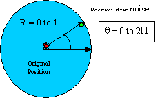

The networking module establishes a send and receive server from the given IP and port number entered at the command line. If an invalid or no IP and port number were entered, the simulator will be initialized on the local host 127.0.0.1 and port 4545.
After the server is established, the networking module
enters a loop that passes any AI data
it receives to the physics engine, runs the physics engine for one cycle, and
sends out vision Packet to the respective AI clients. In order to facilitate this process, the networking module
converts AI data and field
data into structs used by the physics engine.
One pass through this process is known as a frame.
The frame rate is defined to be the number of frames of data per second that the simulator passes and receives from the AI. The frame rate at which the simulator will run can be set under the required attribute frame_rate in the tag <simworld> of the XML parameters file. The simulator automatically adjusts the sleep time between each frame to maintain the desired frame rate.
The in_latency refers to the number of frames of delay from the time when AI data is sent by the AI to the time when these commands are executed by the robots. In other words, the physics engine will receive the AI data after the number of frames specified by in_latency.
The out_latency mimics the latency from vision processing in returning current field data to the AI. Out_latency specifies the number of frames that the field data is delayed before being sent to the AI.
The default latency is set to 0 – the current field data is returned to the AI without delay, and the current AI data is sent to the physics engine without delay. This feature allows for the testing of AI prediction algorithms and similar code.
